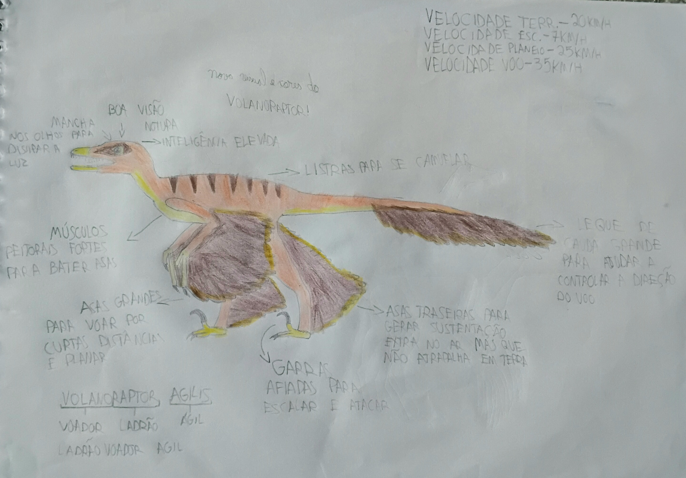

Enciclopédia de um dinossauro fictício
O Volanoraptor agilis é uma espécie fictícia de dinossauro terópode emplumado, inspirada principalmente nos microraptorídeos, especialmente no Sinornithosaurus.
Pode ser descrito, de maneira simplificada, como um Sinornithosaurus com capacidades de voo aprimoradas. Apresenta adaptações para correr, escalar árvores, planar e voar por curtas distâncias.
É um predador ágil, adaptado principalmente à vida nas árvores. Suas asas dianteiras e traseiras, suas garras curvas e sua cauda emplumada ajudam na locomoção e na captura de presas.
O nome Volanoraptor combina a ideia de voo com a de um predador ágil. O epíteto agilis significa "ágil".
| Característica | Informação |
|---|---|
| Nome científico | Volanoraptor agilis |
| Grupo | Dinossauros terópodes |
| Grupo de inspiração | Microraptorídeos |
| Período geológico | Cretáceo Inferior |
| Época aproximada | 121 milhões de anos atrás |
| Região geográfica | Liaoning, nordeste da China |
| Formação geológica | Formação Yixian |
O Volanoraptor viveu, dentro da ambientação fictícia da espécie, há aproximadamente 121 milhões de anos, durante o Cretáceo Inferior.
Sua distribuição geográfica corresponde à região de Liaoning, na China, associada à Formação Yixian, a mesma formação geológica em que foram encontrados fósseis de Sinornithosaurus.
A escolha de 121 milhões de anos representa um meio-termo aproximado entre as idades associadas a diferentes microraptorídeos usados como inspiração para a espécie.
A plumagem típica do Volanoraptor apresenta tons de marrom avermelhado, com faixas mais escuras nas costas e nas laterais do corpo. A região inferior do pescoço e do ventre é amarelada, assim como partes do focinho e dos pés.
As penas das asas e da cauda são predominantemente castanho-escuras, criando contraste com as partes mais claras do corpo.
A combinação de cores do Volanoraptor foi concebida para favorecer a camuflagem em ambientes florestais, especialmente durante a escalada, o repouso e a aproximação de presas.
| Habilidade | Velocidade aproximada |
|---|---|
| Corrida | 15 km/h |
| Escalada | 5 km/h |
| Planeio | 40 km/h |
| Voo | 55 km/h |
O Volanoraptor consegue correr sobre o solo e os galhos suficientemente largos. Apesar disso, prefere utilizar as árvores para se deslocar com segurança e aproveitar suas habilidades de planeio.
Suas garras curvas permitem agarrar a casca das árvores e os galhos. Ele pode subir pelos troncos, movimentar-se pelos ramos e alcançar pontos elevados para observar o ambiente.
O planeio é uma de suas principais formas de deslocamento. Ao saltar de um galho elevado, ele abre as asas dianteiras e utiliza as penas dos membros posteriores e da cauda para controlar a trajetória.
Para percorrer distâncias entre árvores, o planeio pode ser mais rápido e eficiente do que descer ao solo e correr.
O Volanoraptor é capaz de realizar voos curtos, utilizando suas asas para gerar sustentação e impulsionar o corpo. Seus músculos peitorais fortes e suas penas adaptadas ao voo contribuem para essa habilidade.
Embora seja capaz de voar, ele não depende exclusivamente do voo contínuo. A escalada e o planeio continuam sendo partes fundamentais de sua locomoção.
A cauda emplumada auxilia no equilíbrio, enquanto as asas e as penas posteriores permitem ajustar a direção durante o planeio e as manobras entre os galhos.
O Volanoraptor passa boa parte de sua vida nas árvores, onde encontra abrigo, locais para nidificação e oportunidades de caça.
O solo é utilizado quando necessário, mas o animal costuma preferir as partes elevadas da floresta, que oferecem diferentes rotas de fuga e pontos de observação.
O Volanoraptor é carnívoro e se alimenta principalmente de animais pequenos que consegue capturar nas árvores, durante o voo ou no solo.
O tamanho e a composição de suas presas variam conforme a disponibilidade de alimento no ambiente.
O Volanoraptor é geralmente solitário. Fora da época de acasalamento, costuma caçar e se deslocar individualmente, utilizando as árvores para encontrar alimento e abrigo.
Durante a primavera, que corresponde à sua época de acasalamento, os indivíduos formam pares reprodutivos.
Apesar de seu comportamento normalmente solitário, vários Volanoraptors podem cooperar para caçar presas maiores que seriam difíceis de capturar por um único indivíduo.
O Volanoraptor utiliza três estratégias principais: perseguição aérea, perseguição pelas árvores e emboscada.
O Volanoraptor utiliza vocalizações e movimentos corporais para se comunicar com outros indivíduos.
Durante a época de acasalamento, a comunicação ajuda os indivíduos a reconhecerem seus parceiros e a manterem contato nas proximidades do ninho.
A reprodução ocorre principalmente na primavera. Nesse período, indivíduos normalmente solitários formam pares reprodutivos.
O Volanoraptor constrói ou adapta seu ninho em locais elevados e relativamente protegidos.
Seus locais preferidos para nidificação são:
Esses locais oferecem proteção e permitem que os adultos utilizem as árvores para chegar ao ninho e sair dele.
Na configuração fictícia da espécie, cada ninhada contém aproximadamente quatro a seis ovos.
Depois da postura, os pais apresentam funções diferentes e complementares no cuidado da ninhada.
O macho procura alimento e leva comida ao ninho para alimentar a fêmea durante a incubação e, posteriormente, os filhotes.
Ele também pode ajudar a defender a área do ninho contra possíveis ameaças.
A fêmea permanece no ninho durante a incubação, mantendo os ovos protegidos.
Depois da eclosão, ela continua no ninho para proteger os filhotes e cuidar deles enquanto ainda são pequenos.
Quando os filhotes já estão suficientemente maduros para sair do ninho, começam a acompanhar visualmente as atividades dos pais.
Nessa fase, observam as caçadas dos adultos para aprender como identificar presas, reconhecer oportunidades de ataque e utilizar as árvores durante a perseguição.
Esse aprendizado ocorre gradualmente. Os jovens podem observar os pais antes de começarem a praticar suas próprias técnicas de caça.
O período de dependência dos pais termina gradualmente, conforme os jovens desenvolvem suas habilidades de locomoção, caça e sobrevivência.
A expectativa de vida estimada para o Volanoraptor é de até 15 anos, de acordo com a configuração fictícia da espécie.
A longevidade de cada indivíduo dependeria de fatores como disponibilidade de alimento, doenças, acidentes e presença de predadores.
A agilidade, a escalada e a capacidade de planar permitem que o Volanoraptor utilize as árvores como refúgio. Entretanto, essas habilidades não eliminam completamente os riscos de predação.
Filhotes e indivíduos surpreendidos no solo são especialmente vulneráveis.

Reconstrução artística do Volanoraptor agilis.